TRAIN S0/S1/S2와 자연평가 비교
TRAIN: 빨강=가린감독점,초록=남은점. 평가: 노랑=예측,초록=정답참조. 800px는검출매칭실패벌점. 평가6모델은윗줄R0/TEACHER/OLD_STUDENT,아랫줄S0/S1/S2.
Clean · wood_183705:000149 — S0 279.08 → S2 10.95px (변화 -268.14px)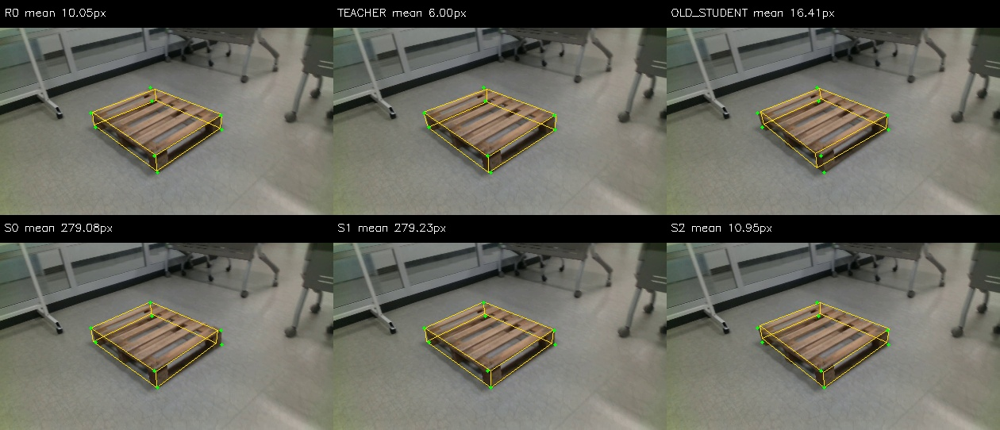
중간 가림 · wood_183705:001263 — S0 112.76 → S2 26.93px (변화 -85.83px)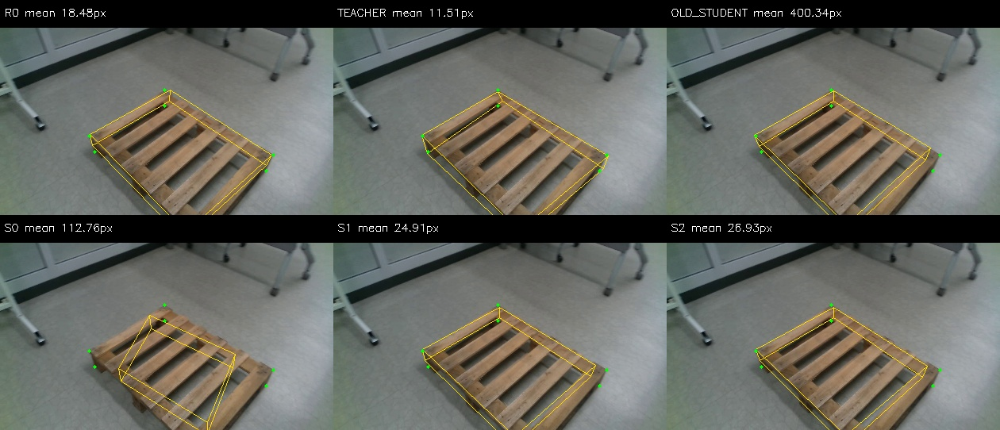
심한 가림 · eval_night09:1779449596017728000 — S0 800.00 → S2 8.69px (변화 -791.31px)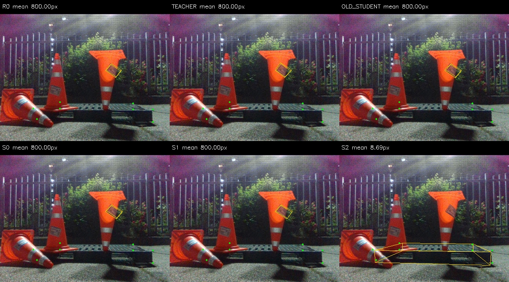
Clean · wood_184309:001201 — S0 8.18 → S2 24.57px (변화 +16.39px)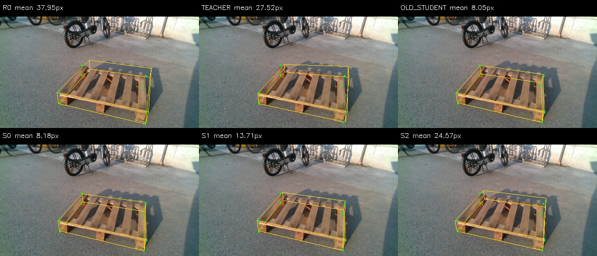
중간 가림 · wood_day_01:002141 — S0 6.73 → S2 198.65px (변화 +191.93px)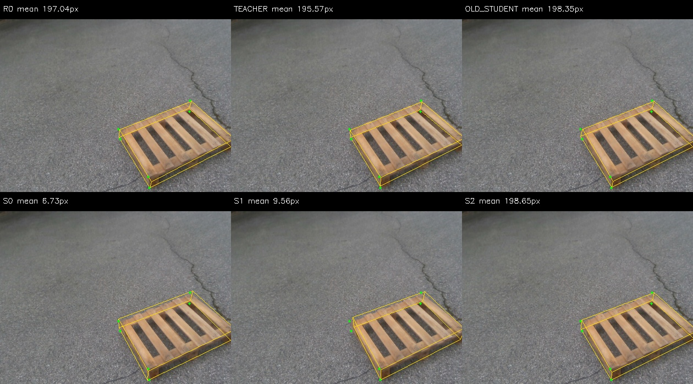
심한 가림 · eval_outside:1778651650839160832 — S0 23.25 → S2 38.42px (변화 +15.16px)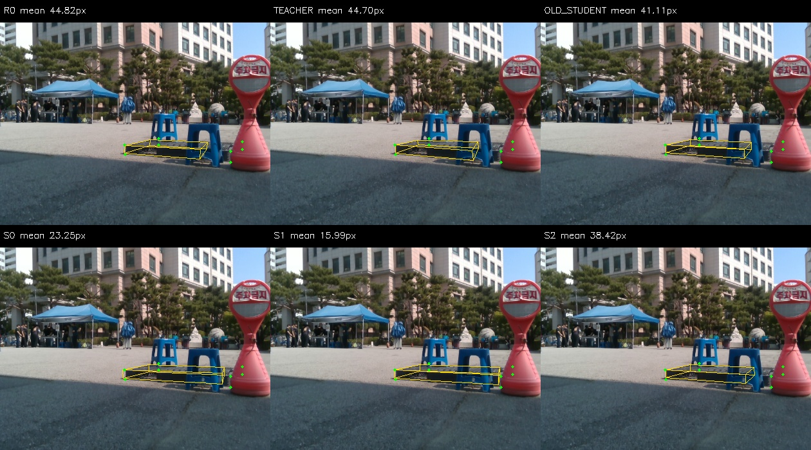
Clean · eval_cad:1778653030233998336 — S0 16.80 → S2 16.21px (변화 -0.58px)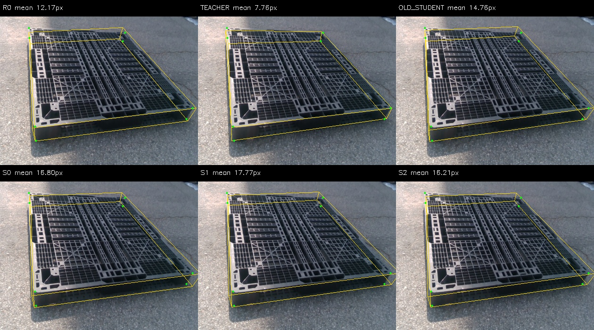
중간 가림 · eval_night08:1779449488068910592 — S0 14.83 → S2 15.31px (변화 +0.47px)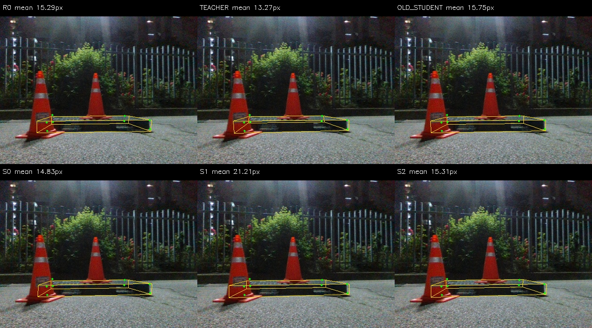
심한 가림 · eval_pallet09:1778653811763352320 — S0 47.98 → S2 49.66px (변화 +1.68px)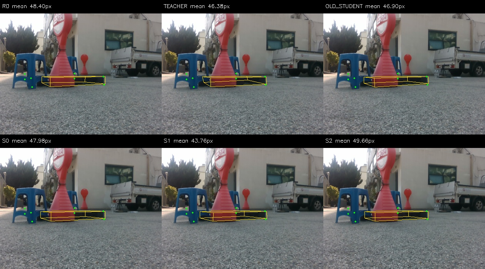
WOOD · epoch 1 · slot 934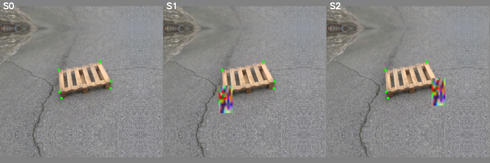
WOOD · epoch 2 · slot 795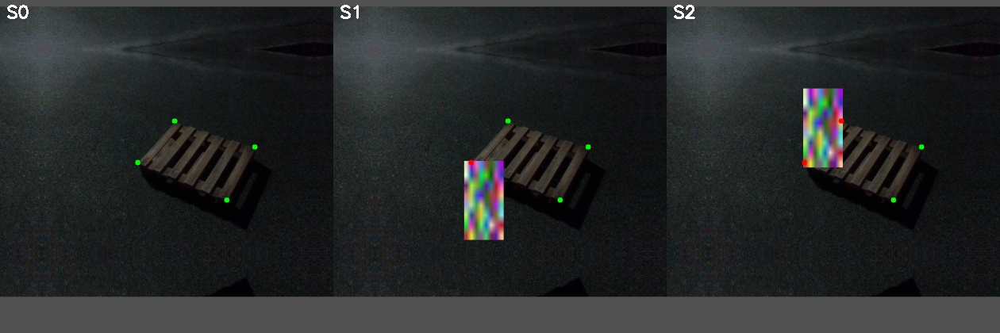
WOOD · epoch 5 · slot 885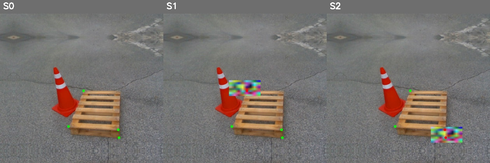
WOOD · epoch 4 · slot 534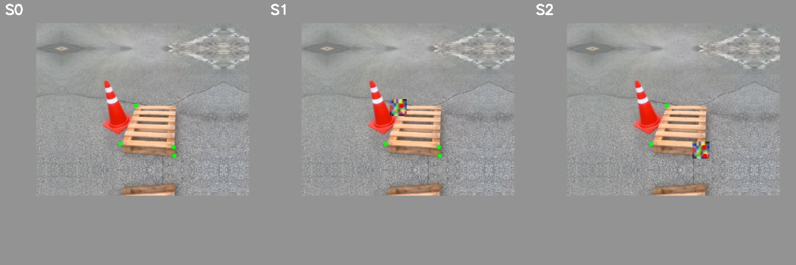
WOOD · epoch 3 · slot 897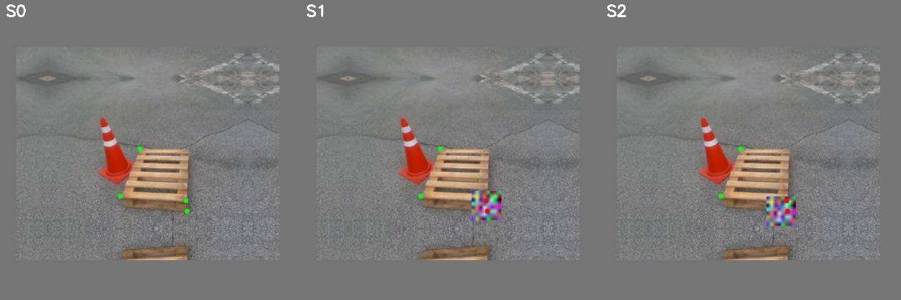
WOOD · epoch 4 · slot 731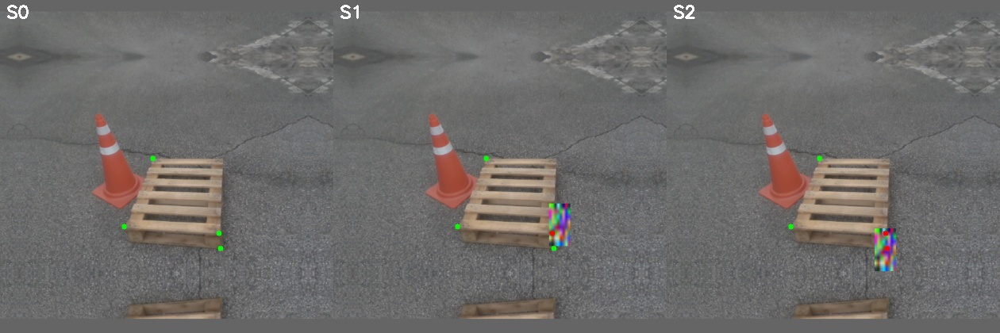
PLASTIC · epoch 4 · slot 178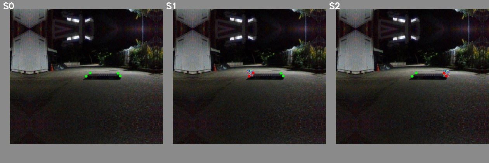
WOOD · epoch 4 · slot 776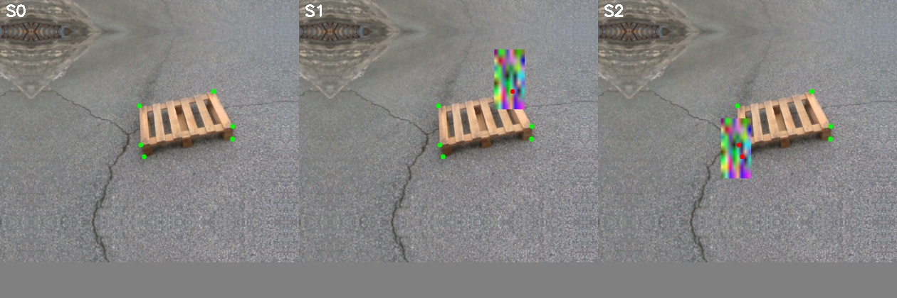
WOOD · epoch 2 · slot 210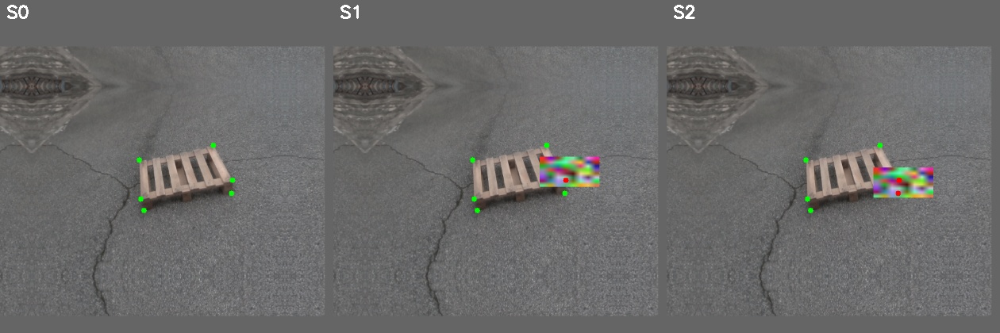
WOOD · epoch 1 · slot 200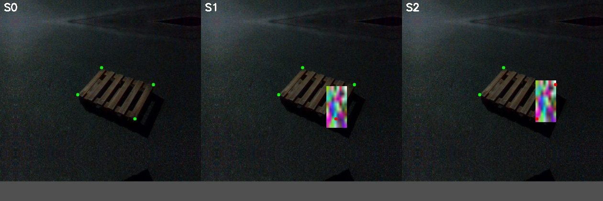